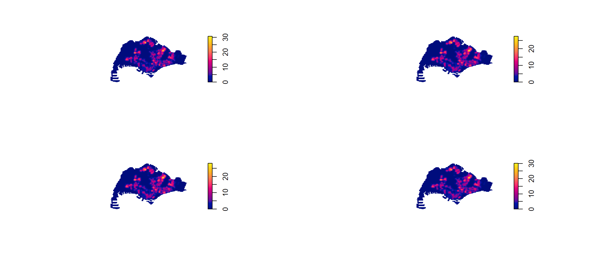
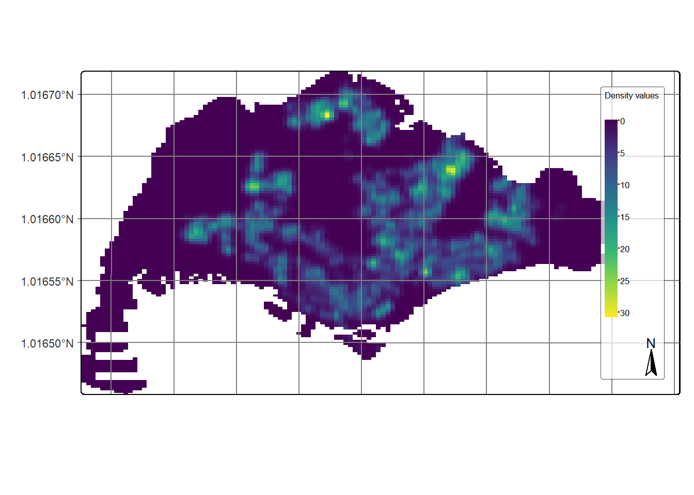
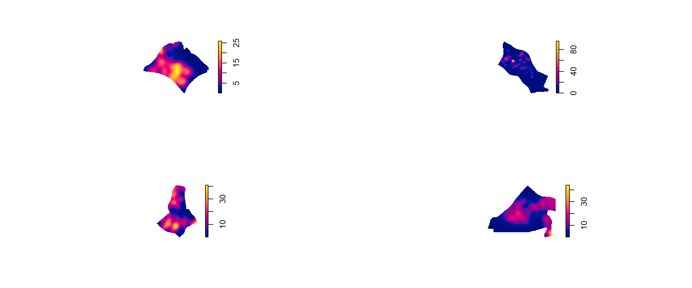
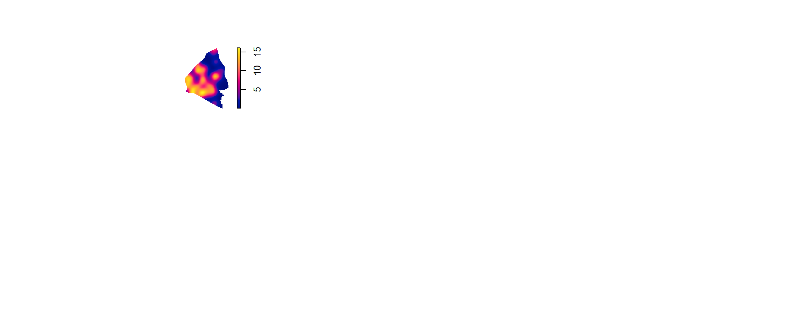

Hands-on Exercise 2-1 & 2-2
First-order Spatial Point Patterns Analysis Methods
1.Installing and Loading the R packages
2.Importing and Wrangling Geospatial Data Sets
mpsz_sf <- st_read("data/MasterPlan2019SubzoneBoundaryNoSeaGEOJSON.geojson") %>%
st_zm(drop = TRUE, what = "ZM") %>% st_transform(crs = 3414)Reading layer `MasterPlan2019SubzoneBoundaryNoSeaGEOJSON' from data source
`C:\Sathvika-7284\ISSS626-geo\Hands-on_Ex\Hands-on_Ex02\data\MasterPlan2019SubzoneBoundaryNoSeaGEOJSON.geojson'
using driver `GeoJSON'
Simple feature collection with 332 features and 2 fields
Geometry type: MULTIPOLYGON
Dimension: XY
Bounding box: xmin: 103.6057 ymin: 1.158699 xmax: 104.0885 ymax: 1.470775
Geodetic CRS: WGS 84Code
extract_kml_field <- function(html_text, field_name) {
if (is.na(html_text) || html_text == "") return(NA_character_)
page <- read_html(html_text)
rows <- page %>% html_elements("tr")
value <- rows %>%
keep(~ html_text2(html_element(.x, "th")) == field_name) %>%
html_element("td") %>%
html_text2()
if (length(value) == 0) NA_character_ else value
}Code
mpsz_sf <- mpsz_sf %>%
mutate(
REGION_N = map_chr(Description, extract_kml_field, "REGION_N"),
PLN_AREA_N = map_chr(Description, extract_kml_field, "PLN_AREA_N"),
SUBZONE_N = map_chr(Description, extract_kml_field, "SUBZONE_N"),
SUBZONE_C = map_chr(Description, extract_kml_field, "SUBZONE_C")
) %>%
select(-Name, -Description) %>%
relocate(geometry, .after = last_col())childcare_sf <- st_read("data/ChildCareServices.geojson") %>%
st_zm(drop = TRUE, what = "ZM") %>%
st_transform(crs = 3414)Reading layer `ChildCareServices' from data source
`C:\Sathvika-7284\ISSS626-geo\Hands-on_Ex\Hands-on_Ex02\data\ChildCareServices.geojson'
using driver `GeoJSON'
Simple feature collection with 1925 features and 2 fields
Geometry type: POINT
Dimension: XYZ
Bounding box: xmin: 103.6878 ymin: 1.247759 xmax: 103.9897 ymax: 1.462134
z_range: zmin: 0 zmax: 0
Geodetic CRS: WGS 843. Mapping the geospatial data sets
4. Geospatial Data wrangling
4.1 Converting sf data frames to ppp class
Marked planar point pattern: 1925 points
Average intensity 2.417323e-06 points per square unit
Coordinates are given to 11 decimal places
Mark variables: Name, Description
Summary:
Name Description
Length:1925 Length:1925
Class :character Class :character
Mode :character Mode :character
Window: rectangle = [11810.03, 45404.24] x [25596.33, 49300.88] units
(33590 x 23700 units)
Window area = 796335000 square units4.2 Creating owin object

4.3 Combining point events object and owin object
4.4 Clark-Evan Test for Nearest Neighbour Analysis
4.4.1 Perform the Clark-Evans test without CSR
4.4.2 Perform the Clark-Evans test with CSR
clarkevans.test(childcareSG_ppp,
correction="none",
clipregion="sg_owin",
alternative=c("clustered"),
method="MonteCarlo",
nsim=99)
Clark-Evans test
No edge correction
Monte Carlo test based on 99 simulations of CSR with fixed n
data: childcareSG_ppp
R = 0.53532, p-value = 0.01
alternative hypothesis: clustered (R < 1)4.5 Kernel Density Estimation Method
4.5.1 Working with automatic bandwidth selection method
real-valued pixel image
128 x 128 pixel array (ny, nx)
enclosing rectangle: [2667.538, 55941.94] x [21448.47, 50256.33] units
dimensions of each pixel: 416 x 225.0614 units
Image is defined on a subset of the rectangular grid
Subset area = 669941961.12249 square units
Subset area fraction = 0.437
Pixel values (inside window):
range = [-6.584123e-21, 3.063698e-05]
integral = 1927.788
mean = 2.877545e-064.5.2 Rescalling KDE values
4.5.3 Working with different automatic badwidth methods
kde_childcareSG.ppl <- density(childcareSG_ppp_km,
sigma=bw.ppl,
edge=TRUE,
kernel="gaussian")
par(mfrow=c(1,2))
plot(kde_childcareSG_km, main = "bw.diggle")
plot(kde_childcareSG.ppl, main = "bw.ppl")
4.5.4 Working with different kernel methods
Code
par(mfrow=c(2,2))
plot(density(childcareSG_ppp_km,
sigma=0.2959712,
edge=TRUE,
kernel="gaussian"),
main="Gaussian")
plot(density(childcareSG_ppp_km,
sigma=0.2959712,
edge=TRUE,
kernel="epanechnikov"),
main="Epanechnikov")
plot(density(childcareSG_ppp_km,
sigma=0.2959712,
edge=TRUE,
kernel="quartic"),
main="Quartic")
plot(density(childcareSG_ppp_km,
sigma=0.2959712,
edge=TRUE,
kernel="disc"),
main="Disc")
4.6 Fixed and Adaptive KDE
4.6.1 Computing KDE by using fixed bandwidth
4.6.2 Computing KDE by using adaptive bandwidth

4.7 Plotting cartographic quality KDE map
4.7.1 Converting gridded output into raster
class : SpatRaster
dimensions : 128, 128, 1 (nrow, ncol, nlyr)
resolution : 0.4162063, 0.2250614 (x, y)
extent : 2.667538, 55.94194, 21.44847, 50.25633 (xmin, xmax, ymin, ymax)
coord. ref. :
source(s) : memory
name : lyr.1
min value : -5.824417e-15
max value : 3.063698e+01
unit : km 4.7.2 Assigning projection systems
class : SpatRaster
dimensions : 128, 128, 1 (nrow, ncol, nlyr)
resolution : 0.4162063, 0.2250614 (x, y)
extent : 2.667538, 55.94194, 21.44847, 50.25633 (xmin, xmax, ymin, ymax)
coord. ref. : SVY21 / Singapore TM (EPSG:3414)
source(s) : memory
name : lyr.1
min value : -5.824417e-15
max value : 3.063698e+01
unit : km 4.7.3 Plotting KDE map with tmap
Code
tm_shape(kde_childcareSG_bw_terra) +
tm_raster(col.scale =
tm_scale_continuous(
values = "viridis"),
col.legend = tm_legend(
title = "Density values",
title.size = 0.7,
text.size = 0.7,
bg.color = "white",
bg.alpha = 0.7,
position = tm_pos_in(
"right", "bottom"),
frame = TRUE)) +
tm_graticules(labels.size = 0.7) +
tm_compass() +
tm_layout(scale = 1.0)
4.8 First Order SPPA at the Planning Subzone Level
4.8.1 Geospatial data wrangling
4.8.1.1 Extracting study area
4.8.1.2 Creating owin object
4.8.1.3 Combining point events object and owin object
childcare_pg_ppp.km = rescale.ppp(childcare_pg_ppp, 1000, "km")
childcare_tm_ppp.km = rescale.ppp(childcare_tm_ppp, 1000, "km")
childcare_ck_ppp.km = rescale.ppp(childcare_ck_ppp, 1000, "km")
childcare_jw_ppp.km = rescale.ppp(childcare_jw_ppp, 1000, "km")
childcare_bk_ppp.km = rescale.ppp(childcare_bk_ppp, 1000, "km")4.8.2 Clark and Evans Test
4.8.2.1 Choa Chu Kang planning area
4.8.2.2 Tampines planning area
4.8.2.3 Jurong west planning area
4.8.2.4 Bukit Batok planning area
4.8.3 Computing KDE surfaces by planning area
Code
par(mfrow=c(2,2))
plot(density(childcare_pg_ppp.km,
sigma=bw.diggle,
edge=TRUE,
kernel="gaussian"),
main="Punggol")
plot(density(childcare_tm_ppp.km,
sigma=bw.diggle,
edge=TRUE,
kernel="gaussian"),
main="Tempines")
plot(density(childcare_ck_ppp.km,
sigma=bw.diggle,
edge=TRUE,
kernel="gaussian"),
main="Choa Chu Kang")
plot(density(childcare_jw_ppp.km,
sigma=bw.diggle,
edge=TRUE,
kernel="gaussian"),
main="Jurong West")
Code

2nd Order Spatial Point Patterns Analysis Methods
1. Installing and Loading the R packages
2. Second-order Spatial Point Patterns Analysis
2.1 Analysing Spatial Point Process Using G-Function
2.1.1 Choa Chu Kang planning area
2.1.1.1 Computing G-function estimation

2.1.1.2 Performing Complete Spatial Randomness Test
Generating 999 simulations of CSR ...
1, 2, 3, ......10.........20.........30.........40.........50.........60..
.......70.........80.........90.........100.........110.........120.........130
.........140.........150.........160.........170.........180.........190........
.200.........210.........220.........230.........240.........250.........260......
...270.........280.........290.........300.........310.........320.........330....
.....340.........350.........360.........370.........380.........390.........400..
.......410.........420.........430.........440.........450.........460.........470
.........480.........490.........500.........510.........520.........530........
.540.........550.........560.........570.........580.........590.........600......
...610.........620.........630.........640.........650.........660.........670....
.....680.........690.........700.........710.........720.........730.........740..
.......750.........760.........770.........780.........790.........800.........810
.........820.........830.........840.........850.........860.........870........
.880.........890.........900.........910.........920.........930.........940......
...950.........960.........970.........980.........990........
999.
Done.2.1.2 Tampines planning area
2.1.2.1 Computing G-function estimation

2.1.2.2 Performing Complete Spatial Randomness Test
Generating 999 simulations of CSR ...
1, 2, 3, ......10.........20.........30.........40.........50.........60..
.......70.........80.........90.........100.........110.........120.........130
.........140.........150.........160.........170.........180.........190........
.200.........210.........220.........230.........240.........250.........260......
...270.........280.........290.........300.........310.........320.........330....
.....340.........350.........360.........370.........380.........390.........400..
.......410.........420.........430.........440.........450.........460.........470
.........480.........490.........500.........510.........520.........530........
.540.........550.........560.........570.........580.........590.........600......
...610.........620.........630.........640.........650.........660.........670....
.....680.........690.........700.........710.........720.........730.........740..
.......750.........760.........770.........780.........790.........800.........810
.........820.........830.........840.........850.........860.........870........
.880.........890.........900.........910.........920.........930.........940......
...950.........960.........970.........980.........990........
999.
Done.
2.1.3 Punggol planning area
2.1.3.1 Computing G-function estimation
2.1.3.2 Performing Complete Spatial Randomness Test
Generating 999 simulations of CSR ...
1, 2, 3, ......10.........20.........30.........40.........50.........60..
.......70.........80.........90.........100.........110.........120.........130
.........140.........150.........160.........170.........180.........190........
.200.........210.........220.........230.........240.........250.........260......
...270.........280.........290.........300.........310.........320.........330....
.....340.........350.........360.........370.........380.........390.........400..
.......410.........420.........430.........440.........450.........460.........470
.........480.........490.........500.........510.........520.........530........
.540.........550.........560.........570.........580.........590.........600......
...610.........620.........630.........640.........650.........660.........670....
.....680.........690.........700.........710.........720.........730.........740..
.......750.........760.........770.........780.........790.........800.........810
.........820.........830.........840.........850.........860.........870........
.880.........890.........900.........910.........920.........930.........940......
...950.........960.........970.........980.........990........
999.
Done.2.2 Analysing Spatial Point Process Using F-Function
2.2.1 Choa Chu Kang planning area
2.2.1.1 Computing F-function estimation
2.2.1.2 Performing Complete Spatial Randomness Test
Generating 999 simulations of CSR ...
1, 2, 3, ......10.........20.........30.........40.........50.........60..
.......70.........80.........90.........100.........110.........120.........130
.........140.........150.........160.........170.........180.........190........
.200.........210.........220.........230.........240.........250.........260......
...270.........280.........290.........300.........310.........320.........330....
.....340.........350.........360.........370.........380.........390.........400..
.......410.........420.........430.........440.........450.........460.........470
.........480.........490.........500.........510.........520.........530........
.540.........550.........560.........570.........580.........590.........600......
...610.........620.........630.........640.........650.........660.........670....
.....680.........690.........700.........710.........720.........730.........740..
.......750.........760.........770.........780.........790.........800.........810
.........820.........830.........840.........850.........860.........870........
.880.........890.........900.........910.........920.........930.........940......
...950.........960.........970.........980.........990........
999.
Done.2.2.2 Tampines planning area
2.2.2.1 Computing F-function estimation
2.2.2.2 Performing Complete Spatial Randomness Test
Generating 999 simulations of CSR ...
1, 2, 3, ......10.........20.........30.........40.........50.........60..
.......70.........80.........90.........100.........110.........120.........130
.........140.........150.........160.........170.........180.........190........
.200.........210.........220.........230.........240.........250.........260......
...270.........280.........290.........300.........310.........320.........330....
.....340.........350.........360.........370.........380.........390.........400..
.......410.........420.........430.........440.........450.........460.........470
.........480.........490.........500.........510.........520.........530........
.540.........550.........560.........570.........580.........590.........600......
...610.........620.........630.........640.........650.........660.........670....
.....680.........690.........700.........710.........720.........730.........740..
.......750.........760.........770.........780.........790.........800.........810
.........820.........830.........840.........850.........860.........870........
.880.........890.........900.........910.........920.........930.........940......
...950.........960.........970.........980.........990........
999.
Done.
2.2.3 Punngol planning area
2.2.3.1 Computing F-function estimation
2.2.3.2 Performing Complete Spatial Randomness Test
Generating 999 simulations of CSR ...
1, 2, 3, ......10.........20.........30.........40.........50.........60..
.......70.........80.........90.........100.........110.........120.........130
.........140.........150.........160.........170.........180.........190........
.200.........210.........220.........230.........240.........250.........260......
...270.........280.........290.........300.........310.........320.........330....
.....340.........350.........360.........370.........380.........390.........400..
.......410.........420.........430.........440.........450.........460.........470
.........480.........490.........500.........510.........520.........530........
.540.........550.........560.........570.........580.........590.........600......
...610.........620.........630.........640.........650.........660.........670....
.....680.........690.........700.........710.........720.........730.........740..
.......750.........760.........770.........780.........790.........800.........810
.........820.........830.........840.........850.........860.........870........
.880.........890.........900.........910.........920.........930.........940......
...950.........960.........970.........980.........990........
999.
Done.2.3 Analysing Spatial Point Process Using K-Function
2.3.1 Choa Chu Kang planning area
2.3.1.1 Computing K-fucntion estimate

2.3.1.2 Performing Complete Spatial Randomness Test
Generating 99 simulations of CSR ...
1, 2, 3, 4, 5, 6, 7, 8, 9, 10, 11, 12, 13, 14, 15, 16, 17, 18, 19, 20,
21, 22, 23, 24, 25, 26, 27, 28, 29, 30, 31, 32, 33, 34, 35, 36, 37, 38, 39, 40,
41, 42, 43, 44, 45, 46, 47, 48, 49, 50, 51, 52, 53, 54, 55, 56, 57, 58, 59, 60,
61, 62, 63, 64, 65, 66, 67, 68, 69, 70, 71, 72, 73, 74, 75, 76, 77, 78, 79, 80,
81, 82, 83, 84, 85, 86, 87, 88, 89, 90, 91, 92, 93, 94, 95, 96, 97, 98,
99.
Done.2.3.2 Tampines planning area
2.3.2.1 Computing K-fucntion estimation

2.3.2.2 Performing Complete Spatial Randomness Test
Generating 99 simulations of CSR ...
1, 2, 3, 4, 5, 6, 7, 8, 9, 10, 11, 12, 13, 14, 15, 16, 17, 18, 19, 20,
21, 22, 23, 24, 25, 26, 27, 28, 29, 30, 31, 32, 33, 34, 35, 36, 37, 38, 39, 40,
41, 42, 43, 44, 45, 46, 47, 48, 49, 50, 51, 52, 53, 54, 55, 56, 57, 58, 59, 60,
61, 62, 63, 64, 65, 66, 67, 68, 69, 70, 71, 72, 73, 74, 75, 76, 77, 78, 79, 80,
81, 82, 83, 84, 85, 86, 87, 88, 89, 90, 91, 92, 93, 94, 95, 96, 97, 98,
99.
Done.2.3.3 Punngol planning area
2.3.3.1 Computing K-fucntion estimation

2.3.3.2 Performing Complete Spatial Randomness Test
Generating 99 simulations of CSR ...
1, 2, 3, 4, 5, 6, 7, 8, 9, 10, 11, 12, 13, 14, 15, 16, 17, 18, 19, 20,
21, 22, 23, 24, 25, 26, 27, 28, 29, 30, 31, 32, 33, 34, 35, 36, 37, 38, 39, 40,
41, 42, 43, 44, 45, 46, 47, 48, 49, 50, 51, 52, 53, 54, 55, 56, 57, 58, 59, 60,
61, 62, 63, 64, 65, 66, 67, 68, 69, 70, 71, 72, 73, 74, 75, 76, 77, 78, 79, 80,
81, 82, 83, 84, 85, 86, 87, 88, 89, 90, 91, 92, 93, 94, 95, 96, 97, 98,
99.
Done.2.4 Analysing Spatial Point Process Using L-Function
2.4.1 Choa Chu Kang planning area
2.4.1.1 Computing L Fucntion estimation

2.4.1.2 Performing Complete Spatial Randomness Test
Generating 99 simulations of CSR ...
1, 2, 3, 4, 5, 6, 7, 8, 9, 10, 11, 12, 13, 14, 15, 16, 17, 18, 19, 20,
21, 22, 23, 24, 25, 26, 27, 28, 29, 30, 31, 32, 33, 34, 35, 36, 37, 38, 39, 40,
41, 42, 43, 44, 45, 46, 47, 48, 49, 50, 51, 52, 53, 54, 55, 56, 57, 58, 59, 60,
61, 62, 63, 64, 65, 66, 67, 68, 69, 70, 71, 72, 73, 74, 75, 76, 77, 78, 79, 80,
81, 82, 83, 84, 85, 86, 87, 88, 89, 90, 91, 92, 93, 94, 95, 96, 97, 98,
99.
Done.2.4.2 Tampines planning area
2.4.2.1 Computing L-fucntion estimate

2.4.2.2 Performing Complete Spatial Randomness Test
Generating 99 simulations of CSR ...
1, 2, 3, 4, 5, 6, 7, 8, 9, 10, 11, 12, 13, 14, 15, 16, 17, 18, 19, 20,
21, 22, 23, 24, 25, 26, 27, 28, 29, 30, 31, 32, 33, 34, 35, 36, 37, 38, 39, 40,
41, 42, 43, 44, 45, 46, 47, 48, 49, 50, 51, 52, 53, 54, 55, 56, 57, 58, 59, 60,
61, 62, 63, 64, 65, 66, 67, 68, 69, 70, 71, 72, 73, 74, 75, 76, 77, 78, 79, 80,
81, 82, 83, 84, 85, 86, 87, 88, 89, 90, 91, 92, 93, 94, 95, 96, 97, 98,
99.
Done.2.4.3 Punngol planning area
2.4.3.1 Computing L-fucntion estimate
2.4.3.2 Performing Complete Spatial Randomness Test
Generating 99 simulations of CSR ...
1, 2, 3, 4, 5, 6, 7, 8, 9, 10, 11, 12, 13, 14, 15, 16, 17, 18, 19, 20,
21, 22, 23, 24, 25, 26, 27, 28, 29, 30, 31, 32, 33, 34, 35, 36, 37, 38, 39, 40,
41, 42, 43, 44, 45, 46, 47, 48, 49, 50, 51, 52, 53, 54, 55, 56, 57, 58, 59, 60,
61, 62, 63, 64, 65, 66, 67, 68, 69, 70, 71, 72, 73, 74, 75, 76, 77, 78, 79, 80,
81, 82, 83, 84, 85, 86, 87, 88, 89, 90, 91, 92, 93, 94, 95, 96, 97, 98,
99.
Done.